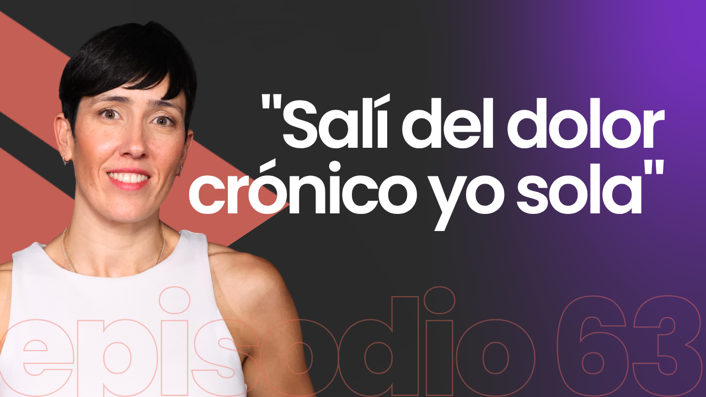

Una evolución del sistema que ya usa el canal, no un cambio de marca. Todo lo que hay aquí está medido sobre las piezas publicadas, o calculado. Estado a 10 de septiembre.
Movimiento Desencadenado
Movimiento Desencadenado
Careta · 1920 × 1080. La flecha acelera, golpea la otra mitad del isotipo y el cambio de superficie sale de ese punto. El marco es el de una entradilla de YouTube: lo que cambia es la pieza, no la página.
La decisión que hay que tomar
¿Manda la superficie clara o la oscura?
El sistema funciona entero en las dos y no cambia nada más: mismo acento, mismo logo, misma tipografía, mismo gesto. Lo que cambia es cuál abre y cuál acompaña. Aquí está cada una en la misma pieza, la miniatura de YouTube, que es donde más se juega.
episodio 63
"Salí del dolor crónico yo sola"
Clara. Con el invitado a color, la persona es lo único con color en la pieza. Es más de papel, más silenciosa, y en la parrilla oscura de YouTube destaca sola.
episodio 63
"Salí del dolor crónico yo sola"
Oscura. Es la continuidad con los 60 y pico episodios ya publicados, el acento salta más y la pieza pesa más en pantalla. La piel del invitado compite con el fondo.
Lo que dice el númeroSobre la parrilla blanca de YouTube, la clara tiene 1,22 de silueta y necesita que la flecha sangre por el borde para recortarse. La oscura se recorta sola. Sobre la parrilla oscura pasa justo lo contrario.
La recomendaciónLa clara, por lo que hace con las personas: si el invitado va a color, el fondo neutro lo deja como único color de la pieza. Pero es una decisión de marca, no técnica, y la última palabra es de Juan.
Elijas la que elijas, la otra no se tira: la que no mande es la superficie alterna y da el ritmo, tarjeta a tarjeta en el carrusel y sección a sección en la web.
Lo que cambia respecto a lo que hay hoy
El invitado va a color.Son los protagonistas. El blanco y negro queda para material de archivo.
Un solo acento: #E8503C.El mismo en las dos superficies. Antes hacían falta dos rojos distintos porque ninguno pasaba en las dos.
El logo va en una tinta.Blanco sobre la oscura, negro sobre la clara. El púrpura sale del sistema entero.
El gesto de fondo es la flecha del isotipo.Monocroma, tono sobre tono. Antes eran bandas diagonales en coral.
El filete es un sistema, no un adorno.La misma línea mide el avance en el carrusel, en las placas de vídeo y en la web.
Corte de temporada.Los 60 y pico episodios publicados no se recolorean: lo nuevo empieza en la temporada 26/27.
El logo
Negro sobre la superficie clara.
Blanco sobre la superficie oscura.
El dibujo no se toca. Lo único que cambia es que va en una tinta, siempre. Y no es una renuncia estética: el logo a color no llega a contraste sobre ninguna superficie, porque siempre falla una de sus dos mitades.
Superficie
Mitad coral
Mitad púrpura
La peor
Blanco
2,89
7,76
2,89
Clara #E9E9E7
2,38
6,39
2,38
Oscura (arriba)
4,80
1,79
1,79
Oscura (abajo)
5,76
2,15
2,15
El mínimo para que una forma se lea es 3:1. En la práctica el logo ya iba en una tinta en todo lo que existe hoy (cabecera de YouTube, perfil de Instagram, entradilla de vídeo): esto solo lo escribe. Consecuencia: el púrpura deja de vivir dentro del logo y sale del sistema; el logo bicolor pasa a archivo histórico.
Donde no cabe el logotipo con palabras (avatar, favicon, marcas de 32 px) va solo el isotipo. A ese tamaño, "Movimiento Desencadenado" sería una mancha.
Superficies
Clara
Plana, sin degradado.
#E9E9E7
Oscura
Degradado vertical: el azul vive en el tercio de arriba y muere antes de la mitad. Es lo que la separa de un negro cualquiera.
#252D39 → #232426 → #1E1E1E
Alternan para dar ritmo: en carrusel slide a slide, en web sección a sección. Nunca dentro de la misma pieza.
Acento
3,06 sobre la clara · 4,48 sobre la oscuraCoral #E8503Cel único acento, en las dos superficies
Uno, no dos. El sistema anterior necesitaba un coral para el fondo oscuro y otro más profundo para el claro, porque el vivo sobre claro se quedaba en 2,38. Este pasa en las dos con un solo valor, y por eso puede ser el acento y no dos según el soporte. El púrpura queda fuera: 2,15 sobre la oscura.
Pieza
Acento
Púrpura
Tarjeta de cita 2.0 (6 slides)
0,95 % a 1,44 %
0
Miniatura de YouTube 2.0
0,4 %
0
Portada de episodio, sistema viejo
3,8 %
1,8 %
Miniatura de YouTube, sistema viejo
9,8 %
10,4 %
La ración: el acento nunca pasa del 10 % del área pintada, y en la práctica se queda muy por debajo. Marca una palabra del claim, el rótulo, el filete y el rol. Lo que el sistema retira no es coral: es púrpura de superficie.
Tipografía · Axiforma
Claim · 900 · 1.00No está fuera. Está dentro.
Nombre · 700Juan Nieto
Cuerpo · 400 · 1.42Controlar la mente con la mente es muy complicado. El cuerpo es la constante.
Rótulo · 700 · 0.18emLa idea
Caja mixta en titulares: las mayúsculas son lenguaje Polestar.
El filete · la línea que mide el avance
Una sola línea, el mismo trabajo en todo el pack
Ya estaba en dos sitios sin que nadie lo hubiera escrito: la barra de navegación del carrusel y el filete que sale del rótulo en las placas de vídeo. Es el mismo elemento haciendo lo mismo, decir por dónde vas. Al declararlo componente, entra en el resto del pack sin inventar nada.
Carrusel. 190 × 2 px arriba a la derecha, pista al 40 % y tramo activo en acento. Dice en qué tarjeta vas.
Gracias por tu tiempo
Placas de vídeo. El filete arranca donde acaba el rótulo y muere antes del margen. Medido en la placa del canal: 3 px de grosor, de x 624 a 1655 sobre 1920.
Juan NietoMD #41
Rótulo de vídeo. El mismo filete, girado: barra vertical en acento a la izquierda del nombre.
Grosor: 2 px por cada 1080 px de ancho de la pieza, redondeado a entero, mínimo 2. Así pesa lo mismo en un carrusel que en una placa de 1920 o en una web. Y una regla que lo mantiene limpio: un solo filete por pieza, y siempre horizontal salvo en el rótulo de vídeo.
La tarjeta de cita · la pieza que define la marca
Clara.
Oscura. Alternan para dar ritmo al deslizar.
Acento único, invitado a color, logo en una tinta, isotipo tono sobre tono detrás. La foto es un placeholder hasta tener los recortes reales de cada invitado. Claim en Axiforma Black a 84 px con el remate en acento, contexto en Book a 31 px, atribución abajo a la izquierda y filete de navegación arriba a la derecha. Márgenes de 90 px.
Vídeo · entradilla, cierre y careta
Las placas que usa el canal hoy ya tienen la estructura buena: rótulo, filete, titular en dos líneas, plataformas. Lo que sobra es el color. Debajo, la misma geometría medida y repintada con el sistema: fuera los glows morados y rosas, el filete en el acento y la flecha en el tercio derecho para no cruzar el texto.
Hoy. Píldora blanca con texto púrpura y dos glows de color detrás.
Repintada. Mismo sitio para todo: rótulo a 108 px del borde, filete a la altura del rótulo, titular a 119 px y las plataformas abajo.
Cierre, hoy.
Cierre repintado, aquí en la superficie clara para ver las dos.
Careta, hoy. Degradado morado y logo a color.
Careta repintada. El logo en su sitio medido: 856 px de ancho, centrado exacto. Este es el fotograma final; la careta entera es lo que se ha reproducido al abrir esta página, y se puede volver a ver desde la portada.
La careta cuenta la marca en dos segundos y medio, y es lo que se ha reproducido en la portada de esta página. La flecha entra por la izquierda y viaja hasta hacer contacto con la otra mitad del isotipo; en ese fotograma aparece la segunda pieza y la superficie pasa de oscura a clara. No hay ningún elemento nuevo: son las dos mitades del logo que ya existen y las dos superficies del sistema.
El cambio es un golpe, no una transición. Cuatro cosas lo hacen: ocurre en un fotograma, no en un fundido; cae exactamente en el instante del contacto; lleva un fotograma de impacto a blanco pleno de 33 ms, que el ojo retiene y hace que el corte se lea como golpe y no como un fallo; y la energía se reparte al cuadro con una sacudida de 5 px amortiguada en 100 ms y un asentamiento del logo del 3,5 %. Durante el vuelo la flecha va desenfocada, como iría en vídeo. Cuando esto se renderice a 1920 × 1080, el sonido cae en el fotograma del corte.
Los logos de plataforma son los del cierre original, Spotify y Apple Podcasts, en su sitio y a su tamaño medidos (Spotify a 239 × 77 desde el margen, Apple Podcasts a 318 × 72, con 100 px entre los dos). Son marcas de terceros: no se recolorean ni se rehacen. Lo único que elegimos es la versión que contrasta con la superficie. Es también la única excepción al radio 0 del sistema, y conviene que esté escrita para que nadie intente "arreglarla".
Cabeceras y perfil
YouTube · 2560 × 1440. El logotipo va a 1200 × 400, centrado dentro de la franja segura de 1546 × 423, que es lo único que se ve en móvil y escritorio. Por encima de ese tamaño se corta en móvil.
Instagram · perfil. Solo el isotipo, al 89 % del diámetro, sobre fondo limpio sin flecha.
Un solo primario por pantalla. Sin esquinas redondeadas: el isotipo es todo aristas. El botón de acento lleva tinta oscura; con blanco encima no llega a contraste (2,89).
Lo que se jubila
La miniatura del episodio 63, la pieza de la que salió el formato nuevo, reúne casi todo lo que sale del sistema. Debajo, la misma pieza con la misma geometría.

Hoy. Degradado púrpura ocupando un tercio, dos bandas diagonales en coral, invitada en blanco y negro y la cita cortada por el borde.
episodio 63
"Salí del dolor crónico yo sola"
Con el sistema. Misma geometría, misma cita, misma persona: cambia lo que sobra.
El púrpura, en cualquier uso.También dentro del logo: la píldora de "Episodio NN" y el degradado de las miniaturas, que llegaba al 10,4 % del área.
Los dos corales.#F36F62 y #BE3A2B, y el #CC1F0F que se probó antes: tiraba a granate.
La banda diagonal.La sustituye la flecha del isotipo, monocroma y confinada a un lado.
El invitado en blanco y negro.Y el logo a color, que pasa a archivo histórico.
La vuelta que conviene dar
Menos piezas, usadas en más sitios
El sistema ya no necesita elementos nuevos: necesita que los que tiene se usen igual en todas partes. Estas seis decisiones son pequeñas y hacen que dos piezas cualesquiera se reconozcan como de la misma marca.
1 · Dos grosores de línea, y ninguno más
2 px · significa1 px · separa
Hoy conviven cuatro: el filete de 2 px, el borde de botón de 2, el borde de tarjeta de 1 y los separadores de 1. La regla: 2 px cuando la línea significa algo (progreso, acento, borde de botón) y 1 px cuando solo separa, siempre en la tinta de la superficie al 14 %.
56 px de alto para botones y logos de plataforma, para que hagan línea cuando van juntos. Y el ratón no cambia el color del acento ni levanta el botón: invierte relleno y filete. Ahora mismo el primario aclara a un coral que no existe en la paleta.
3 · Las comillas, en toda cita
El cuerpo es la constante
Dos barras al ángulo de la flecha. Hoy solo viven en la miniatura de YouTube y son de lo más reconocible que tiene la marca: van también en la tarjeta de cita, en el destacado de un artículo y en cualquier testimonio.
4 · El número en contorno, como marca de sección
episodio 63
Igual que las comillas: existe en una pieza y sirve en todas. Numera capítulos, marca secciones y hace de marca de agua sin gastar acento, porque es solo contorno.
5 · La figura, siempre igual
A sangre por un borde, nunca recortada en círculo, y con la cara ocupando en torno al 40 % del alto de la pieza (medido: 42 % en la miniatura). Es lo que hace que dos piezas de formatos distintos se parezcan.
6 · Radio 0, y una excepción escrita
Nada de lo nuestro redondea: el isotipo es todo aristas. La única excepción son los logos de plataforma, que son marcas de terceros y van tal cual. Escrito, para que nadie intente arreglarlo.
La web
La página no inventa nada: usa las mismas piezas
Una web de podcast es, en el fondo, cuatro cosas repetidas: una cabecera de sección, una tarjeta de episodio, una cita y un reproductor. Las cuatro salen de lo que ya está decidido, sin componentes nuevos.
Cabecera de sección = rótulo + fileteEl mismo bloque de las placas de vídeo: rótulo en versal y la línea que lo continúa hasta antes del margen. Una por sección, y con eso la página tiene ritmo sin decoración.
Índice y reproductor = la barra de progresoEl filete del carrusel dice en qué tarjeta vas; en la web dice por qué minuto va el episodio y por dónde va la lectura. Es literalmente el mismo componente haciendo su trabajo.
Tarjeta de episodioSin sombra, sin radio, sin borde de color: superficie, media 16:9 a color, marca de episodio con su filete y titular en caja mixta. La jerarquía la da el tamaño, no la caja.
Cita destacadaLas comillas de marca y el claim en Black. Es la tarjeta de cita del carrusel puesta en una columna de texto.
Ritmo de superficiesSección a sección, como en esta misma página. Es lo que evita el muro blanco y lo que hace que la web se lea como la marca y no como una plantilla.
Un solo primario por pantallaEscuchar el episodio. Todo lo demás es secundario o enlace: es la regla que impide que la página se llene de botones de acento.
Lo que hay que rehacer: el prototipo de la web va con los tokens de julio (coral viejo, púrpura, fotos en blanco y negro y la banda diagonal). No es un retoque de CSS: hay que pasarlo a estos tokens y sustituir la diagonal por la flecha.
El mapa · qué está resuelto y qué falta
Pieza
Estado
Nota
Logo y sus versiones
Resuelto
Una tinta, con área de uso por tamaño
Superficies, acento y tipografía
Resuelto
Falta elegir cuál manda
El filete y la flecha
Resuelto
Los dos únicos gestos del sistema
Tarjeta de cita (carrusel)
Resuelto
Con foto placeholder
Miniatura de YouTube
Resuelto
Clonada del episodio 63
Cabeceras y perfiles
Resuelto
YouTube e Instagram exportados
Placas de vídeo (careta, entradilla, cierre)
Propuesto
Geometría clonada; falta animarlas
Portada de episodio (feed 9:16 y 4:5)
Falta
Es la pieza más publicada después de la miniatura
Rótulo de nombre en vídeo
Falta
El componente existe, falta la plantilla a 1920
Web
Falta
El prototipo va con los tokens de julio
Presentación y documento de marca
Falta
Esta página es el borrador
La que falta. La portada de episodio, tal y como es hoy. Es la pieza más publicada después de la miniatura y todavía no tiene versión con el sistema nuevo: cuando la tenga, la píldora será una marca de episodio con su filete, el invitado irá a color y la banda diagonal será la flecha.
Nada de lo que falta cambia el sistema: son plantillas nuevas hechas con las mismas piezas. El orden que propongo es portada de episodio (la que más se publica), luego animar las placas y el rótulo de nombre, y con eso el pack de vídeo queda cerrado; la web va después, porque es la que más trabajo lleva y la que menos urge.